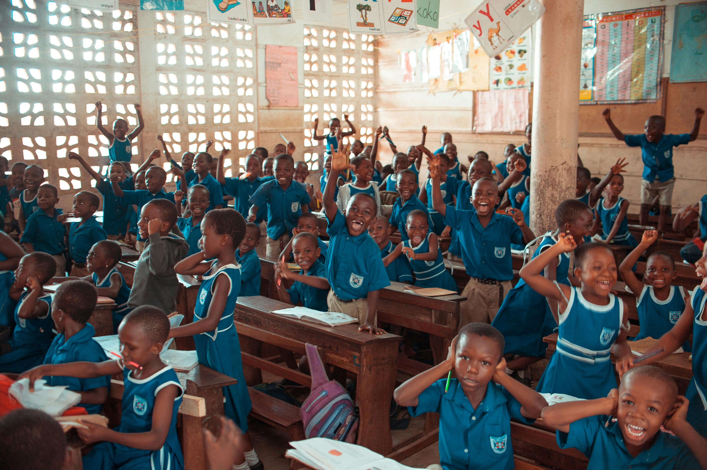

Restoring Dignity,
Transforming Lives in Nigeria
KAKA Humanitarian Foundation is a frontline non-profit organization dedicated to breaking the cycle of poverty and empowering the most vulnerable populations across communities.
Our Mission
To restore dignity and transform lives by providing essential, life-sustaining support—including food, clean water, shelter, education, and healthcare. We foster empowerment within our communities to sustainably break the cycle of poverty.
Our Vision
A world where no one goes hungry, every child receives a quality education, the sick and imprisoned are visited with hope, and the vulnerable are empowered to live meaningful, dignified lives.

Meet Our Leadership
Kaka Prince Chiemezuo is a dedicated humanitarian leader, social entrepreneur, and technology innovator committed to creating sustainable, grassroots impact in communities across Nigeria.
Holding a Bachelor's Degree in Agriculture from Nnamdi Azikiwe University, he possesses a deep understanding of food security and grassroots economic structures. Beyond his philanthropic work, he bridges the gap between technology and social impact as the CEO of Prince Kaka Global Resources—a registered tech and AI solutions company that develops vital digital infrastructure for the Nigerian market, including the NaijaLand and WorkMan platforms.
"I believe that every individual, regardless of their background or circumstances, deserves an opportunity to live with dignity, access quality education, and reach their full potential. Our mission goes beyond temporary relief; we are committed to creating lasting solutions that address poverty and empower the next generation."
Through his leadership, the Foundation has secured strict regulatory compliance (including SCUML certification) to ensure 100% transparent utilization of funds, actively building a platform where trust meets compassionate action.
Our Core Values
The guiding principles that dictate our behavior and action in every community we serve.
Compassion
We serve with profound love and kindness, prioritizing empathy in every interaction and initiative.
Dignity
We believe every human being intrinsically deserves respect, care, and the right to a dignified life.
Community
We recognize that lasting, systemic change is only possible when we work together collaboratively.
Empowerment
We do not just provide temporary aid; we provide education and opportunities that foster long-term independence.
Integrity & Transparency
Governed by SCUML and CAC regulations, we are fully accountable and transparent with 100% of our resources.